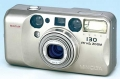

器材
党
全部器材
产品年表
名词百科
榜单
器材库
> 胶片袖珍相机（PS） > Riva Zoom 130

美能达
Riva Zoom 130
分类
胶片袖珍相机（PS）
点评
0 条
图片
0 张
评测
0 篇
Minolta Riva Zoom 130，美洲地区型号为 Freedom Zoom 130
产品类型
胶片袖珍相机（PS）
综合评分
暂无评分
操作手册
在线浏览
无忌评测
暂无评测
规格参数
网友点评
(0)
产品图 / 样片
(0)
评测文章
(0)
规格总览
北美地区型号
Freedom Zoom 130
发布日期
2002-02-04
产品类型
35mm镜间快门相机
使用胶卷/胶片
35mm
画幅
24×36mm
停产
是
镜头及对焦
镜头
37.5-130/5.4-10.5
镜头结构
6片/6组
对焦范围
广角端：0.6m到无限远；长焦端：0.65m到无限远
曝光控制
测光范围
广角端：3-17EV~长焦端：3.6-17EV
快门速度
10 - 1/380秒
胶卷感光度
ISO 25-3200（带DX编码）；ISO 100（非DX编码）
取景规格
取景范围
86%
取景放大倍率
0.4-1.23倍
闪光灯
内置闪光灯
有
闪光涵盖范围
ISO 100, 广角端：0.6-4.3m；ISO 100, 长焦端：0.65-2.1m
其它规格
电池
1枚3V锂电池（CR123A）
尺寸
112 x 60 x 44mm
重量
210g
该产品暂无存档的网友点评
该产品暂无存档的产品图
评测 / 相关文章
该产品暂无存档的评测文章